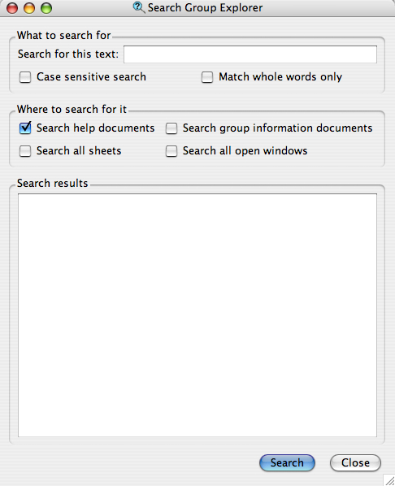

The search window in Group Explorer is very versatile. It is shown here.

The "What to search for" section of the window is straightforward. Enter any text to search for, then choose whether you want the search to be case sensitive (that is, to care whether results have exactly the same capitalization you typed). Also choose whether you want to match whole words only. For example, if you search for "who" and did not check "Match whole words only," then words like "whose" and "chowhound" would be valid matches. Yeah, I like that example, too.
The "Where to search for it" section of the window allows you to choose what portions of Group Explorer to search.
The "Search results" section of the window will be filled with search results after you click the "Search" button. It will be broken into four sections, one for each of the checkboxes listed above. Each section will either say "not searched" if you did not elect to search there, or it will contain a bulleted list of search results.
In all but the last type of search (the search of all open windows) the search results are links, and you can click them to go directly to the search result. In the case of a help page or a group info window, it will open that document; to find the word(s) you searched for within the document, use the Find command in that window. In the case of a sheet, it will load the sheet. The "search all open windows" results will simply be a list of the window titles in which the words you were searching appear; they are not links. You are on your own to find the window on your screen.
Quick help links:
Contents | Getting Started | Tutorials | User Manual | Miscellaneous Reference
GE terminology | Help on help